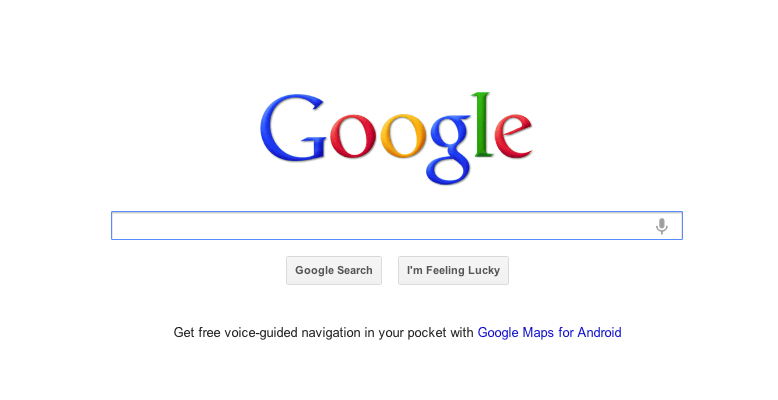
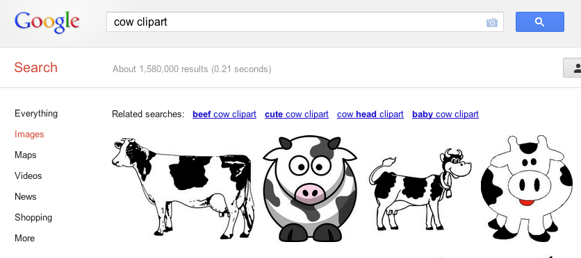
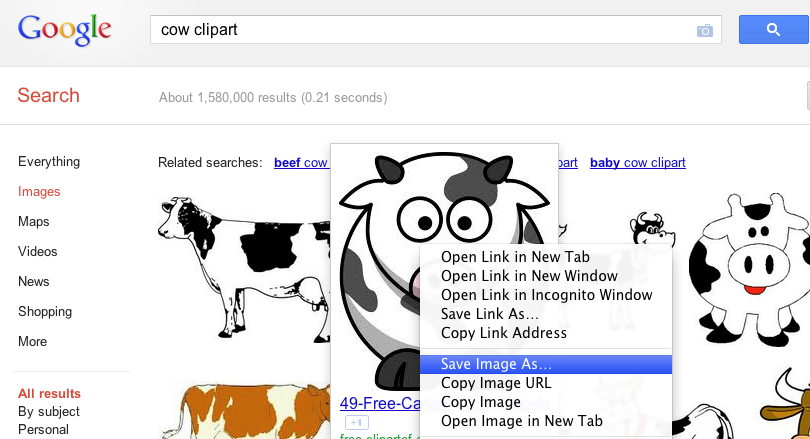
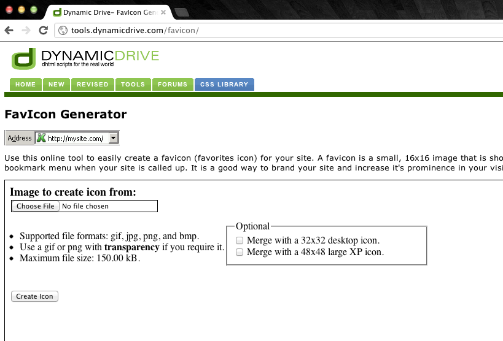
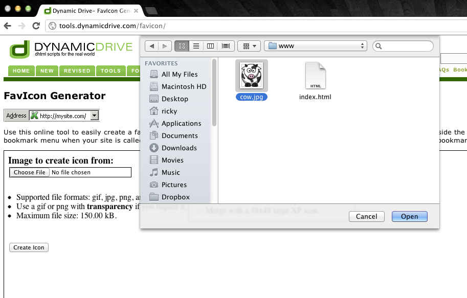
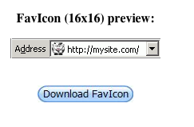
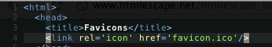
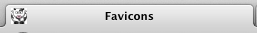

Step 1 - Go to Google.com
Step 2 - Search for an image
Step 3 - Once you find the image, save the image.
Step 4 - Go to http://tools.dynamicdrive.com/favicon/
Step 5 - Upload the image that you just saved to the website
Step 6 - Click create icon
Step 7 - Click on the download favicon button
Step 8 - Put the favicon in the same directory as the index.html file
Step 9 - Add this line of code into the head <link rel='icon' href='favicon.ico'/>
Step 10 - That's it, you should be done!
